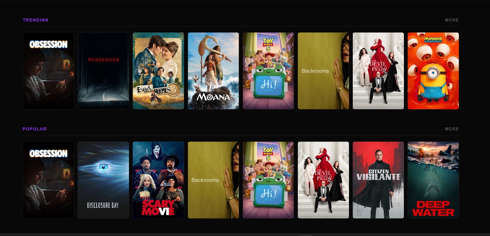

Mijn Projecten

Rental Cars
Het Rental Cars-project was de eerste keer dat ik werkte aan een PHP-databaseproject.
Ik heb dit project samen met een klasgenoot gemaakt.
Het was een interessant project, omdat ik meer ervaring opdeed met databases en leerde hoe je alles goed aan elkaar koppelt en invult.
Rental Cars Github

Administratie system keuzedeel
Het administratiesysteem voor keuzedelen was mijn eerste project waarin ik werkte met een database in Laravel.
Dit was een erg interessant project, omdat de beste versie als basis zou worden gebruikt voor het administratiesysteem van de school.
Voor dit project moesten we een applicatie ontwikkelen met twee verschillende omgevingen: één voor de school en één voor de studenten.
In het systeem kon de school nieuwe keuzedelen aanmaken, keuzedelen activeren of deactiveren en een overzicht bekijken van het aantal ingeschreven studenten per keuzedeel.
Studenten konden vervolgens de beschikbare keuzedelen bekijken en zich hiervoor inschrijven.
Door dit project heb ik veel geleerd over Laravel, databases en het ontwikkelen van een compleet administratiesysteem.
Administratie keuzedeel Github

Cookie Clicker
Cookie Clicker was een JavaScript-project waarbij we een klikspel moesten maken. In dit spel kon je automatisch klikken met autoclickers. Elke autoclicker had een eigen speciale functie. Daarnaast moesten we upgrades maken, zodat de speler verder kon komen en steeds meer cookies kon verdienen.
Door dit project heb ik meer geleerd over JavaScript, functies, knoppen en het maken van interactieve onderdelen in een website.
Cookie Clicker

Queed Project
Het Queed project is mijn 2nd laravel project waar ik aan werk.
Dit was een project waar ik ook weer ging samenwerken met een medestudent.
In dit project hebben we proberen een website na te maken met laravel.
We hadden daarmee API key gebruik om de films te krijgen, en alles goed kunnen kopelen en weergeven.
Queed Project Github